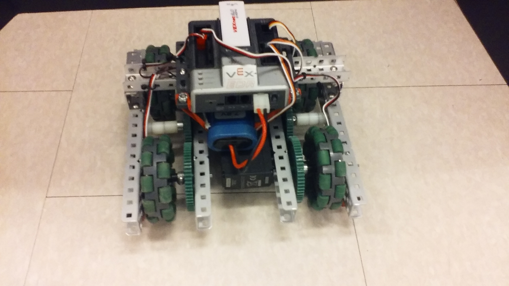

For the Mount Washington Valley Science Fair, my friend and I decided to create a robot that could find its way through a maze. This robot would have a start point and an end point. To make it easier, this robot would know what the maze looked like beforehand.
After some research, we decided the robot should use an A* Algorithm to find its way through the maze. This would allow the robot to find the shortest and therefore most efficient path through the maze. An A* Algorithm measures three things while calculating the shortest path: the H cost, the F cost, and the G cost. These three costs are calculated for each tile that is visited. The G cost is the number of tiles it took to get to the given tile. The H cost is the estimated number of tiles it will take to get to the end. The F cost is the sum of the G cost and the H cost. The shortest path to the end would be the path along the lowest F costs.
Picture of the Pathfinding Sim with the shortest path highlighted in green
The JavaScript Pathfinding Sim showed what the robot saw of the maze. The robot did not check random tiles, it checked tiles in the order that the A* Algorithm determined. The sim is slowed down, so it can show the progress of the robot. In the sim, white tiles are "open" unchecked tiles, so the robot can move on these. Black tiles are "closed", so they represent obstacles, walls, or any area the robot cannot enter. Orange tiles have been "checked", so each tile's H cost, F cost, and G cost has been calculated. These are also added to a list so they can be visited later. Blue tiles have been "visited", so the robot has added those tiles to a path, based off of the previous tile. Green tiles are the "shortest" path, so the robot has found the end on this path of tiles first, so it is the shortest and most efficient path to the end.
This simulation is also interactive. The map can be clicked to design many different mazes. At the top are the base tile types which can be placed onto the grid. Clicking one results in the user's "stylus" changing to that type of tile. But, only one start and one end tile are allowed on the grid at one time. This allows the A* Algorithm to be tested and displayed in more than one setting. Once the simulation has been run, each tiles can be clicked to view its status, H cost, F cost, and G cost, all of which the robot takes into account when determining the shortest path. There is also a slider for the speed of the simulation. The simulation is slowed down, so users can see what the robot sees, rather than only seeing the robot's chosen path. The slider determines how fast the robot moves between tiles, in milliseconds.
To make it easier to keep track of tiles/blocks, a Block Class is used. Each tile/block stores its own (x, y) location in blocks, this.blockX and this.blockY, as well as pixels, this.x and this.y. Helpful functions like co() and coToBlock() are used to easily convert between the two. Each tile/block also stores the methods draw(), erase(), getGCost(), getHCost(), and getFCost(). draw() draws the tile based off of the tile's style. erase() erases the current tile. getGCost(), getHCost(), and getFCost() all calculate their corresponding costs for the tile. Each block also stores this.path, which is the path to get to the tile from the start. Whichever tile the robot uses to reach the end uses this variable to highlight the shortest path.
class Block {
constructor(blockX, blockY, style) {
this.blockX = blockX;
this.blockY = blockY;
this.x = co(blockX);
this.y = co(blockY);
this.style = style;
this.path = [];
// Uncalculated values are -1, an unobtainable number
this.gCost = -1;
this.hCost = -1;
this.fCost = -1;
}
draw() {
this.erase();
if (this.style === "open") {
draw.open(this.x, this.y);
}
else if (this.style === "closed") {
draw.closed(this.x, this.y);
}
else if (this.style === "start") {
draw.start(this.x, this.y);
start = true;
startCo[0] = coToBlock(this.x);
startCo[1] = coToBlock(this.y);
}
else if (this.style === "end") {
draw.end(this.x, this.y);
end = true;
endCo[0] = coToBlock(this.x);
endCo[1] = coToBlock(this.y);
}
else if (this.style === "visited") {
draw.visited(this.x, this.y);
}
else if (this.style === "checked") {
draw.checked(this.x, this.y);
}
else if (this.style === "shortest") {
draw.shortest(this.x, this.y);
}
}
erase() {
draw.erase(this.x, this.y);
}
// Distance from start
getGCost() {
// This is the shortest count of blocks from the start
// Saves the block coordinates in an array
if (this.gCost < 0) {
// getGCost must only be called when robot is on the block
if (this.path.length === 0) {
this.path = checker.center().path.slice(0);
this.path.push(this.blockX);
this.path.push(this.blockY);
}
this.gCost = Math.floor((this.path.length - 1) / 2);
}
return (this.gCost);
}
// Distance from end
getHCost() {
// Estimation by pythagorean theorem
if (this.hCost < 0 ) {
let a = Math.pow(Math.abs(endCo[0] - coToBlock(this.x)), 2);
let b = Math.pow(Math.abs(endCo[1] - coToBlock(this.y)), 2);
this.hCost = Math.round((Math.sqrt(a+b)) * 100) / 100;
}
return(this.hCost);
}
// Both G-Cost and H-Cost
getFCost() {
if (this.fCost < 0) {
let costs = this.getGCost() + this.getHCost();
this.fCost = Math.round(costs * 100) / 100;
}
return (this.fCost);
}
}
The checkAndMoveSimplified() function checks through the tiles until it finds the end tile or there are no more tiles to check. In doing so, this function also moves the checker, represented by a purple block, around the grid to show what tile the code is currently checking. This function is held in a Checker Class which has several other useful methods. In this function, the first method called is lightcheck(), which checks the four tiles surrounding the current tile, calculating each one's H cost, F cost, and G cost. These tiles are added to an ordered array called openPaths, which is organized by fCost. Once a tile from the openPath array has been visited, it is removed from the array. This allows the robot to progress in the best direction towards the end tile. Upon finding the end tile, the robot highlights the shortest path in green.
checkAndMoveSimplified(){
// If at a dead end
if (this.openPaths.length === 0 && this.center().style !== "start") {
// One last check
this.lightCheck();
if (this.openPaths.length === 0) {
print("All possible paths explored, no solution found");
this.stopChecking();
}
}
else if (this.blockX === endCo[0] && this.blockY === endCo[1]) {
print("Found the end!");
// Highlights the path
for (let i = 1; i < (this.center().path.length - 2); i+= 2) {
let tempX = i - 1;
let tempY = i;
updateBlock(this.center().path[tempX], this.center().path[tempY], "shortest");
}
this.stopChecking();
}
else {
// Mark blocks before moving
this.lightCheck();
this.center().draw();
// Change checker xy blocks
this.blockX = this.openPaths[0];
this.blockY = this.openPaths[1];
// Remove block from open path arrays
this.fCosts.splice(0, 1);
this.openPaths.splice(0, 2);
// Move
if (this.center().style !== "end") {
updateBlock(this.blockX, this.blockY, "visited");
}
this.draw();
}
//console.log(checker.blockX, checker.blockY, this.openPaths);
}For a physical robot, my friend and I decided to use a V4 VEX Competition Robot. This robot had two motors with Integrated Motor Encoders (IMEs) to measure its position. Because we used a V4 Robot, the A* Algorithm had to be rewritten in C. Because I wrote the JavaScript program, my friend wrote the C program.
Picture of the pathfinding VEX Robot
To mimic the grid shown in the JavaScript program, we used a ten foot square of plywood. For the lines, black electrical tape was used to make a six by six grid of tiles for the robot. This made a smaller map than what was shown in the JavaScript simulation, but this helped show how quickly a path was calculated.
The robot itself was about eight inches wide, just enough to carry its cortex, battery, and motors. Because the robot was so small, it was very lightweight. This caused some driving issues, as the robot would always drift to the left. When a robot cannot drive consistently in a straight line, it doesn't follow the planned out autonomous, so the robot ends up in the wrong location at the end. To fix this, line trackers were attached on either side of the robot. These looked at the ground and measured light and dark colors, such as the plywood and the black electrical tape. When the robot saw the black tape on one side, that side was given a little more power. This resulted in the robot turning away slightly from the line, rather than drifting right over it.